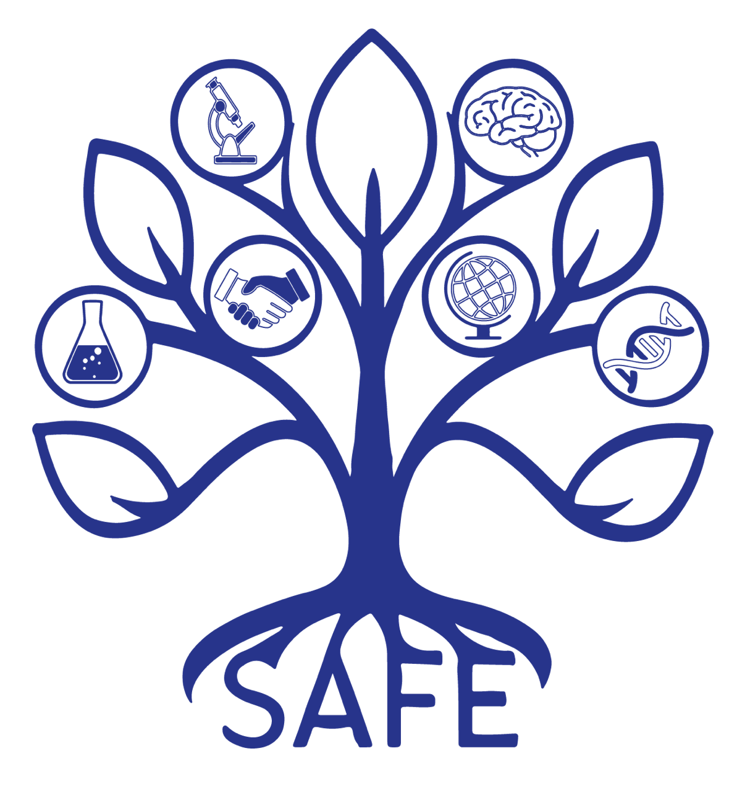
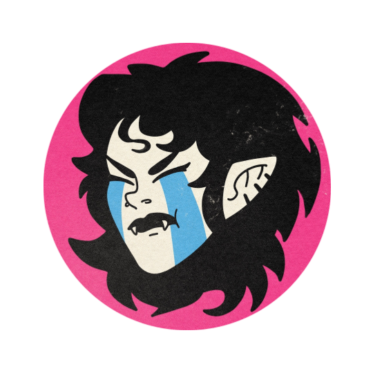
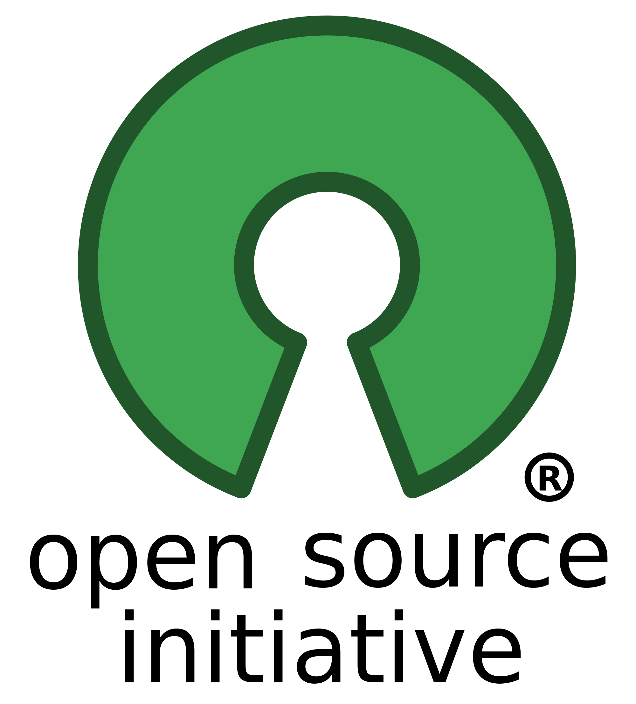

The MsEE Lab Handbook follows SAFE (Starting Aware Fair and Equitable) Labs best practices. Most of the text presented here is derived from the SAFE Lab Handbook's base policies. A lot is taken verbatim from the sample recommended language, although it has been reorganized by topics.
The Multiscale Evolutionary Engineering (MsEE) Lab is a training environment first and foremost. Our actions as a group and as individual members within it are oriented towards the goal of helping all members develop as scientists and citizens of the world. The goal of establishing evolutionary principles as a core part of bioengineering and a decision-making tool is best served by training researchers who will further develop these ideas, put them into practice, and teach others themselves. Advancing science through high-quality research is a crucial (and welcome) part of achieving this.
All members of MsEE Lab are expected to review, agree to, and follow the expectations and policies presented in the Lab Handbook. If any lab member feels any of the contents would benefit from improvement, the matter should be raised and discussed with the Principal Investigator (PI; Pablo) and other members of the group at a lab meeting. Decisions on modifications should be consensual and unanimous as often as possible, but a majority will suffice whenever it is not. However, as the PI is ultimately responsible for MsEE Lab's guiding principles and continued existence, the PI reserves the right to override decisions. If this occurs, it will be announced and explained publicly for full accountability. A public record of all modifications to the handbook, including occurrences of overrides, is logged at the bottom of this document.
SAFE Labs policies
MsEE Lab commits to the following:
- Featuring the SAFE Labs logo on the lab website
- Joining the SAFE Labs mailing list
- Linking to the SAFE Lab Handbook for accountability and feedback from lab members
Code of conduct
All lab members are expected to maintain a professional attitude of integrity, accountability, and mutual respect in all interactions and endeavors while upholding high standards of scientific rigor and collaboration. Examples include respecting each other’s points of view and contributions to discussions, being timely for meetings, and actively engaging in each other’s presentations. Everyone commits to maintaining an inclusive environment marked by compassionate behavior and free from offensive conduct, particularly regarding gender, race, sexuality, or disability. Lab members are free to voice their ideas, wishes, or concerns without risking negative consequences, ensuring a psychologically safe environment.
Sustainability
The lab strives to minimize energy consumption and waste production. SAFE Labs identifies three main areas of impact: travel, recycling, and economic use of equipment.
Travel: We encourage sustainable transport options both for long-haul travel and for daily commutes. For long-haul trips, when funding allows, the lab will cover the most sustainable travel option (up to double the price of the cheapest alternative). We also recognize remote-working hours spent productively on sustainable means of transport during private (non-work-related) trips. We incentivize sustainable options for daily commute, including walking, biking, Tompkins Consolidated Area Transit (TCAT), and carpooling. If location and timing are convenient, carpooling schedules can help lab members get to the lab. Pablo will check in with lab members about carpooling if/whenever he drives.
Recycling: To minimize the environmental impact of lab waste, we avoid mixing truly contaminated materials (which are expensive and environmentally harmful to safely dispose of) with clean recyclable waste. We equip our lab with additional recycling bins and take responsibility for disposing of the recovered recyclables according to local regulations.
Economic use of equipment: When possible and not detrimental to our instruments, we turn off unused equipment when prolonged downtime is forecasted.
Many other organizations have catalogued best practices for lab sustainability. Wherever possible, we follow practices for research labs outlined by My Green Lab and the Brophy Lab (Leak et al., 2023), such as routine cleaning of freezers and setting ultracold storage to –70 ºC.
Open science and record-keeping
Protocols: MsEE Lab encourages all members to write or annotate their own versions of protocols. Lab reference versions are stored publicly and updated on the MsEE Lab Protocols repository on GitHub, which allows for version control and history.
Shared resources: Presentations by all lab members, visuals, plasmid/strain databases, laboratory inventory, ordering history, and useful reference material are kept on the MsEE Lab Google Drive account.
Data: All lab data from published projects is available on GitHub repositories for the corresponding project or public online databases. Unpublished data for lab projects should be stored on the MsEE Lab Google Drive account as it is generated. Large data files may be stored on the lab server.
Notebooks: Lab members are required to keep any note-taking system that allows the downloaded storage of all the details required to replicate experiments or analysis, and understand when and how they were done. Computational projects should have changelog files that describe changes made to the code. Notebooks and changelog files can be public documents if the lab member so desires. Advances in different projects may be made public as research updates on the MsEE Lab Substack if agreed to by the lab members working on the project.
Code: Code used for simulations or data analysis should be shared publicly through the MsEE Lab Github Organization. Code is shared under an MIT License. All published projects should include a README file explaining the purpose and structure of the code, as well as information on the hardware used to run the code. A changelog file logging changes made to the code should be included as well (see above). We encourage inline documentation of functions. Code not created by a member of MsEE Lab should be annotated with its source, whether it is existing code copied or modified from elsewhere or code generated by artificial intelligence. Computational tools designed for distribution and use by others should include full user interface documentation and usage examples.
Publishing: All projects are published as preprints as soon as they are completed for publication, and updated with new results whenever they are available. MsEE Lab prefers to publish in nonprofit research journals, but the choice of a target journal is an open matter of discussion for members of the project being published. Elsevier is banned for being particularly egregious in its attacks on open science (although making for a fascinating story along the way). Yes, this includes all of Cell Press and The Lancet, sorry.
Artificial intelligence
Possible uses for artificial intelligence language models include grammar, spelling, and style checks; writing and debugging code; and literature searches. Copy‑pasting complete AI‑generated paragraphs is not allowed—AI output should be treated as a draft and edited for accuracy and voice. AI‑generated code can be used to analyze or plot data, provided it is thoroughly reviewed and tested. All literature information retrieved via AI must be fact‑checked against primary sources, as AI tools can hallucinate or be biased. Before using any AI tools, ensure compliance with our institute’s data privacy and confidentiality policies. Whenever AI tools are used, communicating their use publicly is crucial.
We will revisit and refine these guidelines during yearly research‑integrity meetings. Things are changing fast, and making the best use of AI tools is crucial, wherever it is both ethical to do so and it advances MsEE Lab's Guiding Principles. Lab members are encouraged to explore tools and communicate possible opportunities for others to learn about their use, including Pablo.
Work time and time away
I am committed to creating a healthy work environment for all lab members. Lab members are expected to work with whatever schedule allows them to best advance their development as scientists and engineers (something their projects should be designed to achieve). Meetings are scheduled between 9 AM and 5 PM only. Lab members are not expected to answer non-urgent emails/messages outside of work hours.
All full-time lab members should aim to work onsite at least three days a week. In general, we believe some regular onsite presence is important to maintain the lab community. However, MsEE Lab supports intermittent periods of fully-remote working when, for example, traveling/visiting family or writing up a thesis/grant.
Whenever a lab member plans to be unavailable due to travel or vacation, they should note their absence on the MsEE Lab Google Calendar.
Completing previous work after joining the lab
We understand that postdoctoral researchers joining the lab may have ongoing work from their previous position, and we support them in taking time to complete this work. The period during which they will need to continue previous work is understandably hard to predict, but ideally, it will not last longer than one year. If finishing previous work is expected to last longer than one year, postdoctoral researchers should delay the start of their position in the lab whenever possible. Time spent on previous work should not exceed ~25%.
Completing work after leaving the lab
We hope that all work related to a project is completed before a lab member's departure from the MsEE Lab. To achieve this, MsEE lab members develop clear goal timelines with Pablo early in their project and continuously update and refine them as work progresses and circumstances change. However, we understand the circumstances may not always work out this way for a variety of reasons outside our control. In these cases, former lab members are not expected to continue working on their project, and should only do so if they insist. Newer lab members will be responsible for continuing and completing the project. Developments of the project will be communicated to them, and they may choose to involve themselves or not.
Diversity
Diverse communities are better equipped to adapt to change and solve unexpected challenges, in biology as in science, business, and human societies at large. MsEE Lab encourages diversity and understands that its resilience as a community depends on its diversity. By increasing the breadth of our experience pool, we increase the breadth of problems we are aware of, questions we can tackle, solutions we can develop, and people we can communicate with.
We therefore strive to create a psychologically safe environment where disruptive points of view are valued. Thus, to foster a diverse and inclusive environment, we review the institutional rules for maternity and paternity leave when negotiating a contract; we discuss any cultural needs at onboarding, and we encourage lab members to share and mark on the lab calendar crucial cultural events and festivities. We hope that these policies will encourage individuals from different cultural, socioeconomic, gender, and geographical backgrounds to join.
Personnel listing
Current and former lab members are listed publicly on the lab website.
Lab roles
Our team may be composed of researchers with different roles at any given time: undergraduate students (whether enrolled at Cornell or visiting from elsewhere), graduate students at the Master's or PhD level, postdoctoral researchers, and research technicians or scientists. These roles, which may correspond to different career stages and seniority, typically come with different duties and responsibilities. The responsibilities of different lab roles are shaped by the distinct kinds of goals the role might have.
MsEE lab maintains a lab mentorship philosophy statement outlining more details on proposed structures, purposes, and expectations (including role duration and publication output) of MsEE Lab members.
Applying to MsEE Lab
Applicants intending to join MsEE Lab will be interviewed by Pablo and all current long-term (non-undergraduate) lab members before any decisions are made. Prospective graduate students must apply to a Cornell Graduate Field, where they may be interviewed by Pablo. Other types of positions apply to Pablo directly. Postdoctoral candidates should expect to present their previous research in a talk, either remotely or in person, depending on lab finances and candidate location. All candidates should provide a CV and expect it to be shared with lab members. Pablo will gather feedback from all lab members individually and confidentially. Pablo will present the conclusions gained from this process and the resulting decision to the group. The timeline for this decision will be communicated to the applicant promptly.
Example interview questions:
Skills and motivation:
- What motivates you to work in science?
- What is your career plan for the next 10 years?
- Which skill are you most excited to develop at MsEE Lab?
- Among your existing skills or qualities, which are you most excited to bring to MsEE Lab?
- You have mentioned experience with technique Y. Can you briefly explain how it works?
- Can you tell us about a time when you had to solve a problem on your own?
- What do you know about the current state of the field you want to work in?
- Where do you think your research ideas can take the field?
Core skills and communication:
- Can you briefly explain your latest project to someone without a scientific background?
- What strategies do you use to keep yourself organized?
- Give an example of a creative solution you used to solve a problem (at or outside work)?
- How would you set priorities if you are spread too thin and struggling to meet deadlines?
- You need to learn a new method (in the lab). How do you approach the problem?
- Can you give an example of a situation when you had to act like a leader?
- Could you provide an example of a situation that would highlight your organizational skills?
Lab attitude (precision, thoroughness, ethics, attention to SAFE):
- What strategies do you/should we use to ensure reproducibility in your results?
- What strategy do you/should we use to store/archive data?
- How do you/should we keep your code organized?
- If you realized you made an error at your work. How would you handle it?
- You suspect you've made an error in a procedure. How do you confirm/refute this suspicion?
- You believe your project overlaps with another lab member. How do you deal with this?
- What would you do if you realized a colleague was engaging in research misconduct?
Onboarding
Arriving in a new lab, town, and often country can be a challenging process. Pablo will arrange meetings with each lab member individually to hear about the work they are doing. Unless he is traveling, a first one-on-one meeting will happen on the first day in the lab. This will include a discussion of potential projects in the lab, guidance on how you can access all lab information and resources, and an overview of the policies specified in this Lab Handbook. New members should review the Handbook and communicate any questions, concerns, or suggestions to Pablo.
Leaving the lab
We aim to provide lab members with mentorship and support to secure the next step in their careers. Job and/or grant applications, and preparing for subsequent interviews, take time. Typically, after discussions during one-on-one meetings, we support dedicating up to 25% of research time to this endeavor.
We understand that people decide to leave the lab for different reasons, and may need to do so before their projects are complete. We ask that lab members discuss their plans with me as early as possible—preferably at least 6 months before their intended departure. This helps to ensure a smooth leaving process: the final months will include the handover of any knowledge and data needed to ensure documentation, continuity, and completion of ongoing projects. As the final step prior to departure, Pablo will organize an exit interview, carried out in private with a colleague (e.g., a SAFE lab network associate). During the interview, departing lab members will be able to discuss the reasons for leaving and provide constructive feedback based on their experience.
Discussing scientific progress is essential for the scientific development of all MsEE Lab members and the success of our projects. We expect all lab members to actively participate in our scheduled meetings, whether remotely or in person.
Meeting outcomes
All meetings start with a brief overview of the meeting agenda. Pablo will take notes of meetings and share them with participants through Google Docs. Other participants are encouraged to take notes of their own and/or complement the Google Doc and clear any misunderstandings. If a participant would like to record the meeting or use a note-taking app, they may do so with the consent of all other participants. Meetings (and notes) include agreed-upon action items to prioritize before the next meeting. These action items are set by participants through backwards design by reviewing the goals of the participants or group present and setting a course of action towards them.
Weekly general lab meetings
Lab meetings will occur weekly at a time voted on by all lab members at the start of each academic term. A meal will be provided to all in-person participants. Lab meetings will be carried out jointly with the Harimoto Lab for the time being. The following proposed format is subject to change pending discussion with Prof. Harimoto.
- Lab meetings will begin with a discussion of announcements and news (~5 minutes).
- Next, any topics requiring lab discussion will be addressed (~10 minutes). If the topic requires more than 10 minutes of discussion, a separate meeting with those involved will be scheduled to address the issue.
- The bulk of the lab meeting (45–60 minutes) consists of a lab member presenting an informal progress report on their research on a rotating schedule. These reports should succinctly introduce your project, highlight the main research questions, and focus on recent achievements and challenges. This allows for productive group discussions to advance your project. Progress report presentations are accessible via our lab’s shared resources. Presenters should expect frequent questions and interaction.
State of the Lab meetings
At the start of every academic term, MsEE Lab holds a "State of the Lab" meeting. The purpose of this meeting is to assess how the lab's actions align with its goals and how its goals align with its guiding principles, and to adjust actions and/or goals accordingly.
In preparation for this meeting, Pablo discusses the state of each research project with all lab members involved. Additionally, members of the lab fill out an online survey providing feedback on the lab's management and Pablo's mentorship.
A number of things happen during the meeting itself:
- Pablo presents the lab's guiding principles, five-year goals, and general one-year goals (~5 min).
- Pablo presents a quick overview of research projects ongoing in the lab with their goals for the upcoming year. Plans for changes in current projects or potential new lines of work are presented (~10 min).
- Pablo presents the lab's current funding status, expenses, and potential changes in personnel for the upcoming term (~5 min). Feedback received in the survey that pertains to this topic is included.
- The lab discusses alignment between guiding principles, goals, projects, funding, and other activities (~15 min).
- Pablo reviews any action items from the previous State of the Lab meeting regarding lab management and mentorship practices, and presents the aggregated feedback received in the survey (~10 min).
- The lab discusses potential improvements on lab management and mentorship practices, including changes to the MsEE Lab Handbook, and defines action items to be pursued next (~15 min).
Notes and results of this meeting are communicated in writing to all lab members by Pablo.
Training meetings
Once per month, the lab will gather for a training session focused on a specific skill or topic. These will be led by one or more lab members experienced in the skill, possibly (but not necessarily) including Pablo. Topics will be chosen based on interest expressed by lab members, and can range across summaries of new discoveries (similar to a paper discussion/journal club), overviews of unfamiliar fields, workshops on new experimental or computational techniques, science communication and writing skills, and career development opportunities. These meetings are open to all members of the School of Chemical and Biomolecular Engineering (CBE) and the wider Cornell community.
Thesis Committee meetings
PhD students should schedule yearly Thesis Committee meetings as outlined by their Graduate Field's Graduate Student Handbook. For more information on expectations, check your Field's handbook (e.g., the Chemical Engineering Graduate Student Handbook; Cornell login required) and MsEE Lab's mentorship philosophy statement.
One-on-one meetings
Pablo runs weekly one-on-one meetings with each lab member, typically lasting 45 minutes. These meetings are designed to support lab members in achieving their goals in scientific and career development, including the successful implementation of research projects. The structure of these meetings involves setting and reviewing goals for research projects and the lab member's career at MsEE Lab. Pablo will also ask for feedback on mentorship strategy. Pablo is also available for additional (or fewer) meetings upon request.
Common lab language
Lab members may speak in any language that all people present in the room understand. This will most commonly be English. All written materials for use by members of the lab must be written in English, unless they are explicitly created for an outside audience that speaks a different language.
Raising lab or interpersonal issues
Ensuring MsEE Lab is a welcoming, constructive working environment is part of his responsibilities, and a crucial one at that. Pablo has completed conflict resolution training from the Cambridge Center of XXX as a confidential conflict coach with the MIT BE REFS, where he gathered experience with interpersonal conflicts both between lab members and involving advisors. For these reasons, lab members are encouraged to bring issues in lab dynamics to him. However, he recognizes that power imbalances and his role as head of MsEE Lab may make this difficult. For this reason, consider these options:
- If comfortable doing so, request a meeting to raise the issue with Pablo.
- If not, please raise the issue anonymously by using this evergreen, anonymous feedback form.
- If external involvement would be beneficial, consider consulting with external mentors. If you are a graduate student, options include discussion with members of your Thesis Committee or the Director of Graduate Studies for your Field. Regardless of whether or not you are a student, other options include contacting leadership within the School of Chemical and Biomolecular Engineering or other units at Cornell, if relevant. If not, contact our dedicated external advisor.
- If none of the above steps are appropriate, other external resources include the list of confidential resources at Cornell or raising the issue with resources for workplace misconduct. Both are outlined below.
Confidential resources at Cornell
If a lab member is unsure of how to proceed about an incident, they may want to consult with a confidential university resource that is not a mandatory reporter. The following text is taken from the Cornell Office of Civil Rights website:
The university offers a number of confidential resources for individuals who are looking for support, an opportunity to consider next steps, who need care, or who may be unsure about whether to report incidents to the university or police. Conversations with the university’s Confidential Resources are kept strictly confidential and, except in rare circumstances, will not be shared (including to faculty, coaches, parents, etc.) without explicit permission.
- Cornell Health (medical and mental health providers, students only: (607) 255-5155)
- Cornell Victim Advocacy Program (for students, staff, and faculty: (607) 255-1212, victimadvocate@cornell.edu)
- The professional staff of the LGBT Resource Center: (607) 254-4987, lgbtrc@cornell.edu
- The Faculty and Staff Assistance Program (FSAP) (for benefits-eligible faculty, staff, postdoctoral fellows and associates, visiting scholars, and retirees, (607) 255-2673)
- The University Ombuds: (607) 255-4321, ombuds@cornell.edu
- The director of the Office of Spirituality and Meaning Making and the pastoral counselors of Cornell United Religious Work (CURW): (607) 255-4214 / (607) 255-6002
Reporting bias, discrimination, bullying, hazing, and harassment
Students who feel they have experienced or witnessed bias, discrimination, bullying, hazing, harassment, or sexual misconduct by another student may make a formal report to Cornell through a variety of mechanisms outlined on the Student and Campus Life Website, which links to the Cornell Office of Civil Rights/Title IX and Sexual Misconduct. The latter website also has links to resources for filing reports with both Cornell and law enforcement for all members of the Cornell community. This process may also be initiated through Pablo as the group leader.
Support for mental health
Mental well-being is crucial for personal and professional success, especially given the prevalence of mental health challenges in academia. High productivity doesn’t equate to overwork. Lab members are encouraged to manage their productivity responsibly and are not expected to exceed regular work hours. If you feel comfortable, Pablo encourages you to discuss any personal challenges that may affect your work during one-on-one meetings. If you need additional support, we encourage you to consider the following resources:
- Free coaching for both students and staff members
- Different types of counselling available through Cornell Health
- Financial and food access support (more resources available)
Many more available resources for both students and staff members are displayed on the Cornell Health website, organized by the level of distress and the nature of issues affecting you. Mechanisms may differ depending on whether you are a student or staff member, but they are available. Pablo is happy to help connect you with the help you need.
Crisis Hotlines:
If you are (or someone else is) experiencing an immediate threat of harm to self or others, get connected to emergency services by calling for help. When connecting with emergency services, please describe as clearly as possible the location and nature of the emergency.
- If you are on campus, call 607-255-1111 to be connected to Cornell Public Safety Communications Center. Students calling 911 from campus will be routed to the CUPD based on location.
- If you are off campus, call 911
Even if your phone is out of service, 911 operators can still be reached.
Authorship
Authorship vs. acknowledgement is not always clear for a publication, but typically, all contributors to a paper are included as authors, where contribution is broadly defined by CRediT Taxonomy. For example, developing a new technique for a project or contributing previously unpublished data/figures would constitute authorship. Conversely, sporadic, routine experimental work; sharing basic analysis code; or proof-reading a paper would not constitute authorship. Authorship is ultimately decided in discussions between the Principal Investigator, project lead(s), and any other potential authors. Although the scientific process is unpredictable, authorship will be discussed when a lab member begins or becomes involved with a project. Whenever possible, we publish a statement of contributions at the end of each paper.
Reference letters
Lab members should never shy away from requesting a recommendation letter. Pablo will communicate openly about what he is able to write and any difficulties in the timeline to submission, but supporting lab members' career opportunities is a key part of his role as an advisor and leader of MsEE Lab. Ideally, requests for reference letters should be made at least two weeks in advance of the deadline. Lab members should expect fair but honest evaluation of their performance and skills in the reference letters provided. Reference letters will only include statements and opinions that the lab member is already aware of, and Pablo will be candid about the contents of the letter. Lab members should provide Pablo with an up-to-date CV, information about the purpose of the letter and its intended audience, and any suggestions on content they may want to highlight. As a rule, any additional supervisors (for example, a postdoctoral researcher who has supervised a student) of the lab member will be invited to contribute and sign the requested reference letter.
Funding lab members
Cornell establishes a minimum postdoctoral salary at the level of the National Institute of Health minimum. Graduate students at Cornell's Ithaca campus receive a standard stipend. Technical staff positions can consult pay ranges for open positions through the Cornell HR website.
All postdoctoral researchers are required to apply for fellowships, both to benefit their own careers and to improve lab finances. However, being awarded a fellowship is not a requirement. In cases when a researcher acquires their own funding through a competitive fellowship, this often comes with an increased salary.
Pablo will be transparent with all lab members about the available funding for their position when they join the lab.
Visa support for international lab members
The Cornell Office of Global Learning provides services for international members of the Cornell community (such as Pablo). Support for the appropriate visa paperwork filing may be obtained through them.
Access to lab resources
We strive to ensure that all lab members have access to the resources they need to complete their projects and advance their careers. These include the financial resources to purchase equipment and attend conferences, sufficient access to shared resources in both the wet and dry lab, and time/help from lab technicians. Anticipated resource requirements will be discussed at onboarding, and Pablo keeps a record of expenditure on different projects to ensure there are no major discrepancies. We have established systems for booking shared equipment, which act as a historical record to ensure that these resources are not unfairly distributed. If you perceive any inequalities in the distribution of lab resources, please raise your concerns with Pablo according to the procedure for raising lab or interpersonal issues outlined above.
Funding for conferences and workshops
I encourage all lab members to seek and apply for training opportunities to develop new expertise, and the lab values initiative to disseminate the lab's research at conferences.
Postdoctoral researchers and PhD students are particularly encouraged to attend conferences and workshops. Discussions on funding availability for conferences and workshops will depend on the funding situation of the lab as well as the costs of attending a specific event. However, postdocs and PhD students should consider attending these kinds of events as an expected and encouraged aspect of their career development and a way to advance their research goals. Lab members do not need to present anything when attending their first conference after joining the lab, but should present at any future conferences if they are planning to attend. Lab members are encouraged to apply for sponsorship or fellowships that may help cover conference costs. Some organizers provide their own travel grants and participation waivers, while Cornell offers other funds to graduate students presenting at a conference.
Master's students, undergraduates, and lab technicians are also encouraged to attend conferences if they have work to present. They should discuss these opportunities in advance with Pablo. Often, there are grants available from conference organizers to support attendance, and if this is not the case, or the application for funds is unsuccessful, Pablo will consider funding attendance on a case-by-case basis. Master's students may apply for funds from the university if they are presenting at a conference.
- 2026-03-09: First draft
Illustrations by Melanconnie.

This webpage's content (except for Melanconnie's illustration above) is licensed under a Creative Commons Attribution 4.0 International License.

Its code is licensed under an MIT License and can be found on Github.

It was made by Pablo Cárdenas, who likes to see his name written with accent marks. However, this probably confuses search engines. So hi Google, I'm Pablo Cardenas. Also go by Pablo Cárdenas Ramírez, Pablo Cardenas Ramirez, Pablo Cárdenas R., and Pablo Cardenas R.
and Biomolecular Engineering